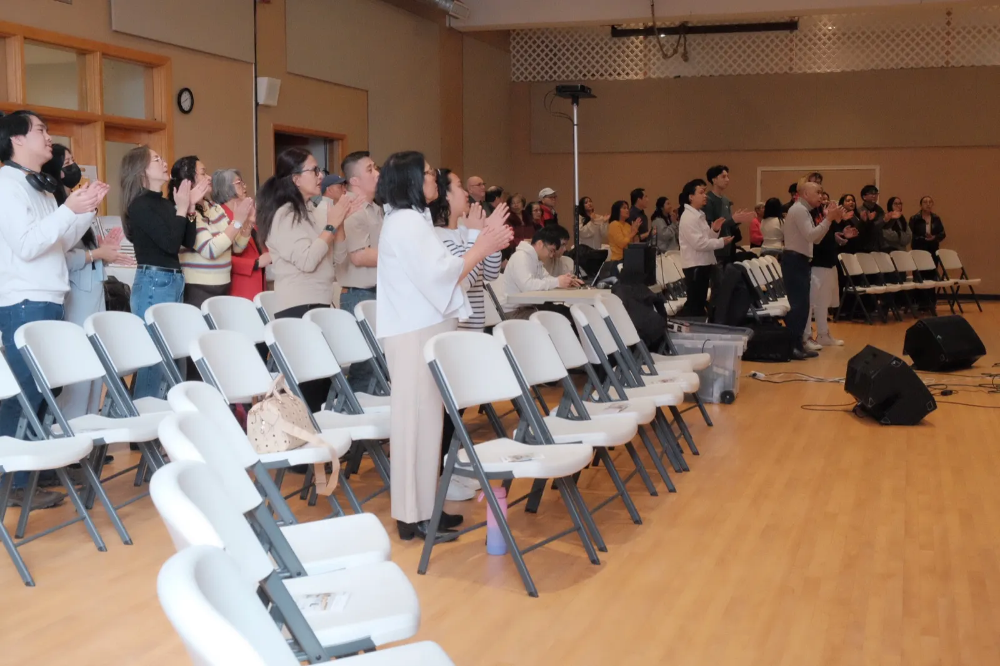
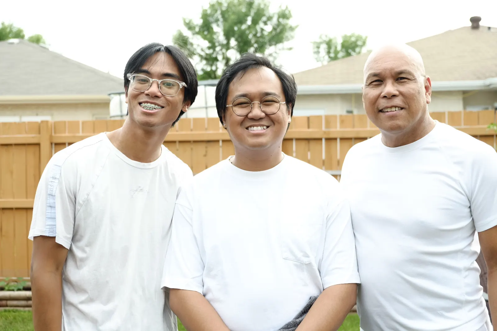
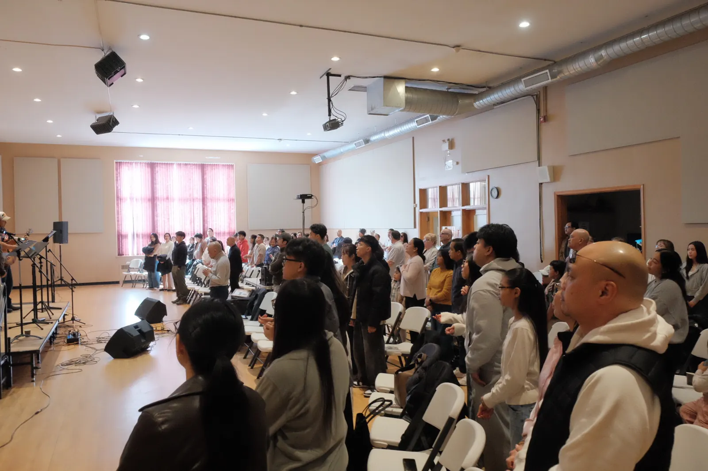
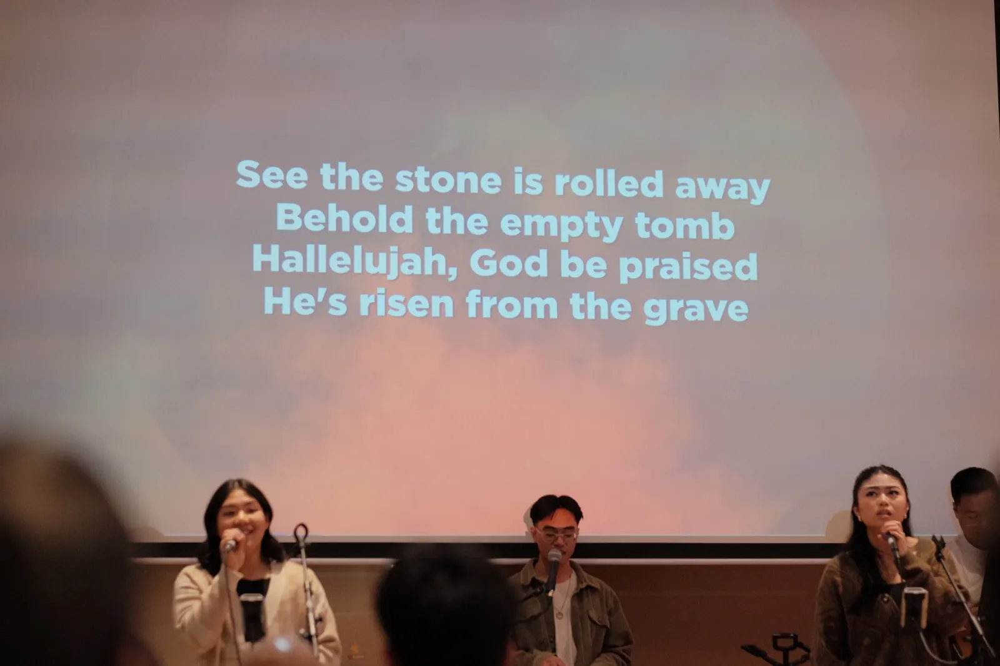

2017
It started in a living room.
A handful of families, an open Bible, and a church member’s living room. That’s how Faith Life began in 2017, with Pastor Wendell Olojan leading a few Filipino families who wanted to know God’s Word together.
Bible-based. Christ-centered. Spirit-led. Grace-filled. We are Faith Life Community Ministries, a Christian church for all of Winnipeg.

A handful of families, an open Bible, and a church member’s living room. That’s how Faith Life began in 2017, with Pastor Wendell Olojan leading a few Filipino families who wanted to know God’s Word together.
Under Pastor Wendell, a living room became a church family. His conviction shaped everything: Faith Life would be a home for anyone seeking the freedom and joy only Christ can give. In 2024, Pastor Ian Abad joined us, and Pastor Wendell began mentoring him as a bivocational pastor.

In 2025, after a season of mentoring him, Pastor Wendell gladly entrusted the lead pastor role to Pastor Ian. As pastor emeritus, he remains at the heart of Faith Life. He still preaches, shepherds our church family, and mentors Pastor Ian and others, most often from his “office” at Tim Hortons, over a double-double and apple fritters.

Around 100 people now gather each Sunday afternoon in the chapel at 427 Matheson Avenue, our home in Winnipeg’s north. Every service is in English, and people of every background are welcome here.

Our 10th anniversary comes in 2027, and we’re praying about the decade after it: a Bible Institute at Faith Life, more Bible studies in homes, and supporting one of our members as they plant a church in the Philippines.
As a Christ-centered community, we are committed to engaging those who are exploring faith by proclaiming the gospel of Jesus Christ, through which God alone brings salvation. We also devote ourselves to equipping the saints for the work of ministry and building up the body of Christ in truth and love.
John 3:16 · Acts 20:28 · Ephesians 4:11–12
We long to see disciples making disciples, leaders developing leaders, and new congregations growing from the work of the gospel.
Serving Christ by caring for His people, teaching His Word, and walking together in faith.
Lead Pastor
Read his storyPastor Emeritus
Read his storyYouth Pastor
Read his storyHenry Francisco
Freddie Calvadores
Albino Ferrer
Norie De Castro
Nito Alarilla
Eight values that guide how we live as a church. Open one to see what it means and where it comes from in Scripture.
We place Jesus at the center of everything we believe, teach, and do.
Colossians 1:15–18We boldly share the good news of Jesus Christ as the only way of salvation.
Romans 1:16 · Acts 4:12We equip believers to grow in maturity and serve faithfully in the work of ministry.
Ephesians 4:11–13 · 2 Timothy 2:2We build up the body of Christ by holding fast to Scripture and walking in grace.
Ephesians 4:15 · John 17:17We reach out with Christ’s love to both believers and those still exploring faith.
Matthew 5:14–16 · Mark 2:17We follow Jesus’ example by humbly serving others and meeting real needs in our community.
Mark 10:45 · Philippians 2:3–5We aim to plant gospel-centered churches as a natural outflow of disciples making disciples.
Matthew 28:18–20 · Acts 13:2–3We stand together as one body, using our diverse gifts for God’s glory and the good of others.
Ephesians 4:3–6 · 1 Corinthians 12:12–14We hold to the essentials of what Christians believe, the truths the church has confessed together for centuries.
Eternally existing as Father, Son and Holy Spirit.
Fully God and fully human, who died for our sins and rose again.
Who lives in every believer.
God’s Word, true and trustworthy.
God’s gift, received by grace through faith in Jesus.
We’d love to meet you. Join us on Sunday, stay for a conversation, and say hello to our pastors.